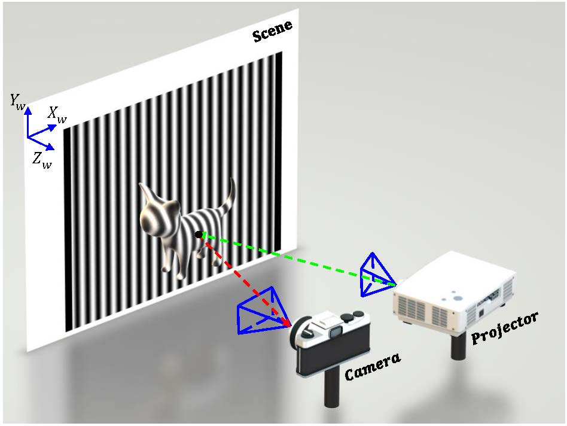
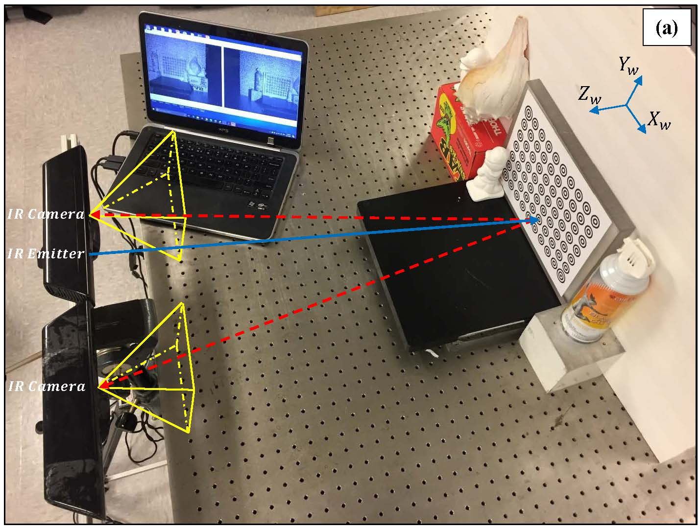
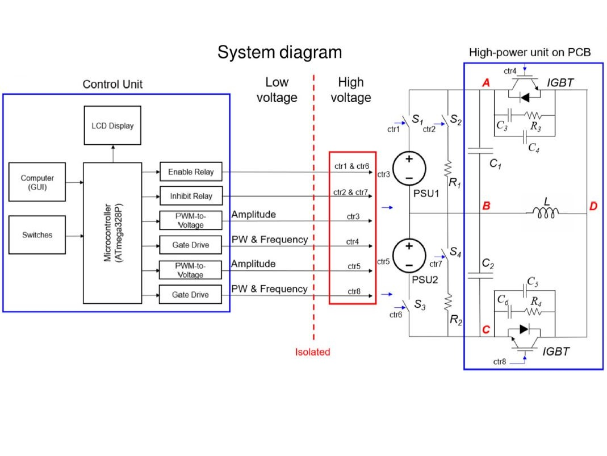

Neuroimaging Research Branch, NIDA-IRP, NIH
Email: hieu.nguyen at nih dot gov,
Google Scholar, LinkedIn
Dr. Hieu Nguyen is an Electrical Engineer and Postdoctoral Research Fellow at Neuroimaging Research Branch, NIDA-IRP, NIH, where his research focus on the Transcranial Magnetic Stimulation (TMS) hardware development
and machine learning in neuroimaging. Before, he was a research assistant at Experimental Mechanics and Computer Vision (EMCV) Labs, working under the supervision of Dr. Zhaoyang Wang on 3D imaging systems.
He previously received B.E. and M.Sc. degrees in the Electrical Engineering Department, Catholic University of America.
Research Interest
Structured-light 3D imaging system

Camera and depth sensors

Transcranial Magnetic Stimulation

Journals
AH. Nguyen, O. Rees, and Z. Wang, "Learning-based 3D imaging from single structured-light image," Graph. Vis. Comput., 2023.
A. Vrana, S. Baldwin, Q. Meng, H. Nguyen, Y. Yang, and H. Lu, "Developing a robust awake rat model for mechanistic study of TMS effects with a focused coil", 4th International Brain Stimulation Conference, Charleston, South Carolina, December 6–9, 2021.
H. Le, H. Nguyen, Z. Wang, et al, "An endoscopic 3D structured illumination imaging system for robotic anastomosis surgery (Conference Presentation)", SPIE BIOS Advanced Biomedical and Clinic Diagnostic and Surgical Guidance Systems XVI, San Francisco (2018).
Z. Wang and H. Nguyen, “3D shape measurement using image-matching-based techniques,” 2017 SPIE Commercial + Scientific Sensing and Imaging, Anaheim, California, Apr 9-13, 2017.
H. Le, H. Nguyen, Z. Wang, and J. Kang, "A demonstration of structured-illumination-based technique using commercial surgical endoscope", CLEO: Applications and Technology, 2017.
H. Le, H. Nguyen, Z. Wang, et al., “3D endoscopic imaging using structured illumination technique for surgical guidance and assessment,” 2017 Advanced Biomedical and Clinical Diagnostic and Surgical Guidance Systems XV Conference, San Francisco, California, Jan 29-31, 2017.
H. Nguyen, Z. Wang, J. Quisberth, “3D shape measurement of shiny object using fringe projection technique,” 2015 SEM Annual Conference and Exposition on Experimental and Applied Mechanics, Costa Mesa, California, June 8-11, 2015.
Z. Wang, H. Nguyen, J. Quisberth, “Accuracy comparison of fringe projection technique and 3D digital image correlation technique,” 2015 SEM Annual Conference and Exposition on Experimental and Applied Mechanics, Costa Mesa, California, June 8-11, 2015.
J. Quisberth, Z. Wang, and H. Nguyen, “Acquisition of audio information from silent high speed video,” 2015 SEM Annual Conference and Exposition on Experimental and Applied Mechanics, Costa Mesa, California, June 8-11, 2015.
H. Kieu, Z. Wang, H. Nguyen, and M. Le, “Single-camera-based 3D DIC for fast-speed measurement,” 2014 SEM Annual Conference and Exposition on Experimental and Applied Mechanics, Greenville, South Carolina, June 2-5, 2014.
H. Kieu, Z. Wang, M. Le, and H. Nguyen, “Passive 3D face reconstruction with 3D digital image correlation,” 2014 SEM Annual Conference and Exposition on Experimental and Applied Mechanics, Greenville, South Carolina, June 2-5, 2014.
M. Le, Z. Wang, and H. Nguyen, “Some practical considerations in high-speed 3D shape and deformation measurement using single-shot fringe projection technique,” 2014 SEM Annual Conference and Exposition on Experimental and Applied Mechanics, Greenville, South Carolina, June 2-5, 2014.
H. Nguyen, H. Kieu, M. Le, and Z. Wang, “Fast-speed, high-accuracy and real-time 3D imaging with fringe projection technique,” 2014 SEM Annual Conference and Exposition on Experimental and Applied Mechanics, Greenville, South Carolina, June 2-5, 2014.
Patents
"PROTOCOL TO ENHANCE THERAPEUTIC EFFECTS OF TRANSCRANIAL MAGNETIC STIMULATION," U.S. Patent Application No. 63/286,229, filed December 6, 2021. (Patent Pending)